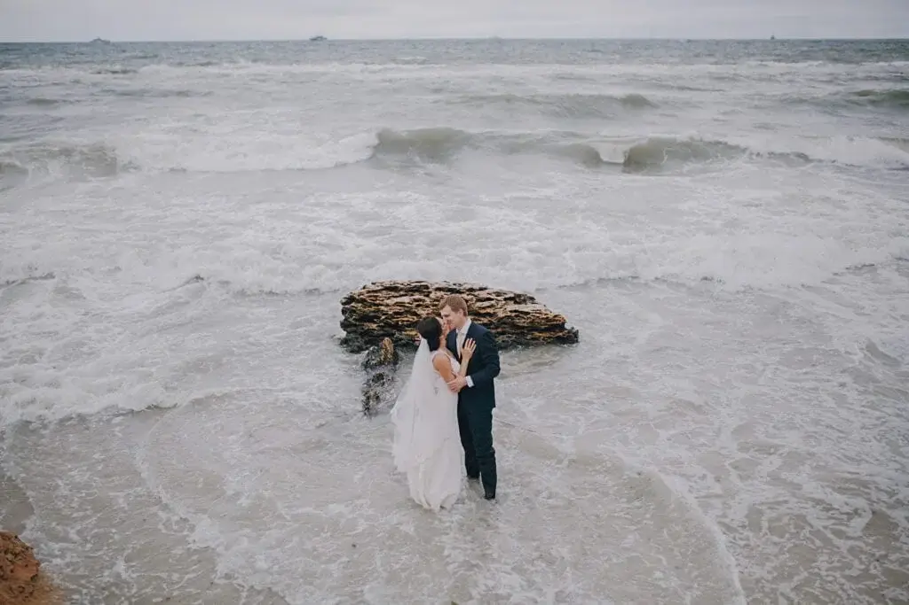
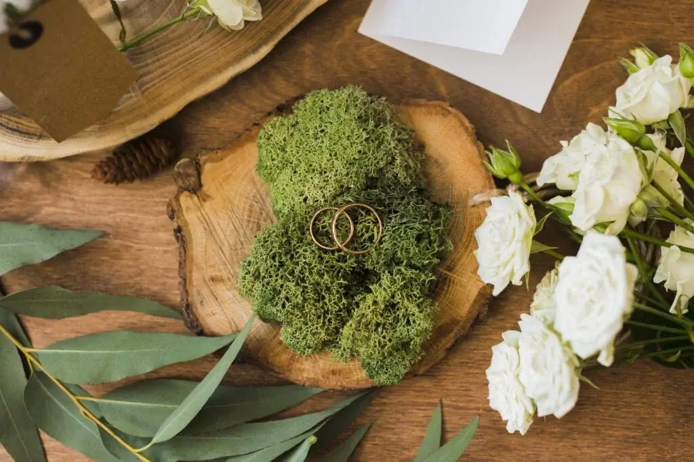

Un mariage avec un lieu atypique sur le bassin d’Arcachon ou le cap ferret vous attire, mais vous ne savez pas comment l’organiser ? Pas de panique ! Je suis là pour tout gérer avec vous…
Un mariage pas comme les autres
Faire un mariage pas comme les autres dans la région bordelaise, vous semble le mieux et c’est ce qui vous correspond le plus, dans un endroit insolite comme un catamaran sur le bassin d’Arcachon. Quel bonheur si vous pouviez vous marier les pieds dans l’eau à la cabane Bartherotte au Cap Ferret ! Un mariage exclusif, sur mesure et authentiquement Bordelais !

La décoration, un atout majeur !
Et pourquoi pas une décoration propre à votre image ainsi votre mariage épatera vos invités près des cabanes d’ostréiculteur. En tant que wedding planner je peux vous organiser le mariage le plus insolite qu’il soit, en m’adaptant à vos demandes et à vos goûts. Faites une cérémonie laïque sur la plage ou même dans un jardin privé !

Un thème et un lieu atypique
Que pensez-vous d’ une arrivée en quads ou même un thème bien différent comme médiéval, les dessins-animés ou éco-responsable. Je le ferai avec plaisir pour que ce jour soit le meilleur. Parlez-moi de vous et de vos envies.
Je vous accompagne !
Je vais vous accompagner dans votre mariage jusqu’au jour J. Je peux vous trouver des prestataires atypiques sur Bordeaux et sa région qui correspondent parfaitement à vos demandes. Vous aimez faire des surprises improbables à vos invités pour les surprendre encore plus ? Et pourquoi pas un magicien qui fait voler la future mariée ?
Contacter moi !
Alors pour organiser VOTRE mariage insolite dont vous rêvez tant, n’hésitez plus à me contacter par mail ou par téléphone pour que nous puissions en discuter ensemble.
Lovely Day Event c'est plusieurs types de prestations
L'organisation de mariage
Je vais intervenir sur toutes les étapes de vos préparatifs et vous guider dans vos choix. Je suis force de proposition pour que votre mariage ne ressemble qu’à vous.
Décoration de mariage
Créative et passionnée, je suis certifiée Wedding Designer et je conçois une ambiance scénographique qui correspond au thème de votre mariage.
Coordination le jour J
Je serai le chef d’orchestre pour gérer les différents prestataires, la mise en place de votre décoration et le déroulement de cette belle journée.